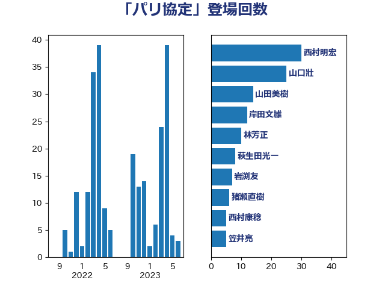

単語「パリ協定」

| 西村明宏 | 自由民主党 | 30 回 |
| 山口壯 | 自由民主党 | 25 回 |
| 山田美樹 | 自由民主党 | 14 回 |
| 岸田文雄 | 自由民主党 | 12 回 |
| 林芳正 | 自由民主党 | 10 回 |
| 萩生田光一 | 自由民主党 | 8 回 |
| 岩渕友 | 日本共産党 | 7 回 |
| 猪瀬直樹 | 日本維新の会 | 6 回 |
| 西村康稔 | 自由民主党 | 5 回 |
| 笠井亮 | 日本共産党 | 5 回 |
| 大岡敏孝 | 自由民主党 | 4 回 |
| 務台俊介 | 自由民主党 | 4 回 |
| 井上哲士 | 日本共産党 | 3 回 |
| 中谷真一 | 自由民主党 | 3 回 |
| 近藤昭一 | 立憲民主党 | 2 回 |
| 角田秀穂 | 公明党 | 2 回 |
| 神谷裕 | 立憲民主党 | 2 回 |
| 滝沢求 | 自由民主党 | 2 回 |
| 岩田和親 | 自由民主党 | 2 回 |
| 山下芳生 | 日本共産党 | 2 回 |
| 宮本徹 | 日本共産党 | 2 回 |
| 大島敦 | 立憲民主党 | 2 回 |
| 高橋光男 | 公明党 | 1 回 |
| 青木愛 | 立憲民主党 | 1 回 |
| 関芳弘 | 自由民主党 | 1 回 |
| 野田佳彦 | 立憲民主党 | 1 回 |
| 輿水恵一 | 公明党 | 1 回 |
| 谷合正明 | 公明党 | 1 回 |
| 藤巻健太 | 日本維新の会 | 1 回 |
| 茂木敏充 | 自由民主党 | 1 回 |
| 若松謙維 | 公明党 | 1 回 |
| 舩後靖彦 | れいわ新選組 | 1 回 |
| 羽田次郎 | 立憲民主党 | 1 回 |
| 福重隆浩 | 公明党 | 1 回 |
| 礒崎哲史 | 国民民主党 | 1 回 |
| 石川昭政 | 自由民主党 | 1 回 |
| 石原宏高 | 自由民主党 | 1 回 |
| 石井啓一 | 公明党 | 1 回 |
| 田嶋要 | 立憲民主党 | 1 回 |
| 牧山ひろえ | 立憲民主党 | 1 回 |
| 水岡俊一 | 立憲民主党 | 1 回 |
| 武井俊輔 | 自由民主党 | 1 回 |
| 松原仁 | 立憲民主党 | 1 回 |
| 朝日健太郎 | 自由民主党 | 1 回 |
| 新妻秀規 | 公明党 | 1 回 |
| 庄子賢一 | 公明党 | 1 回 |
| 平木大作 | 公明党 | 1 回 |
| 平山佐知子 | 無所属 | 1 回 |
| 山添拓 | 日本共産党 | 1 回 |
| 山口晋 | 自由民主党 | 1 回 |
| 宮崎勝 | 公明党 | 1 回 |
| 奥下剛光 | 日本維新の会 | 1 回 |
| 古賀篤 | 自由民主党 | 1 回 |
| 古川直季 | 自由民主党 | 1 回 |
| 井上信治 | 自由民主党 | 1 回 |
| 中川宏昌 | 公明党 | 1 回 |